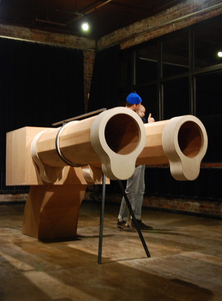
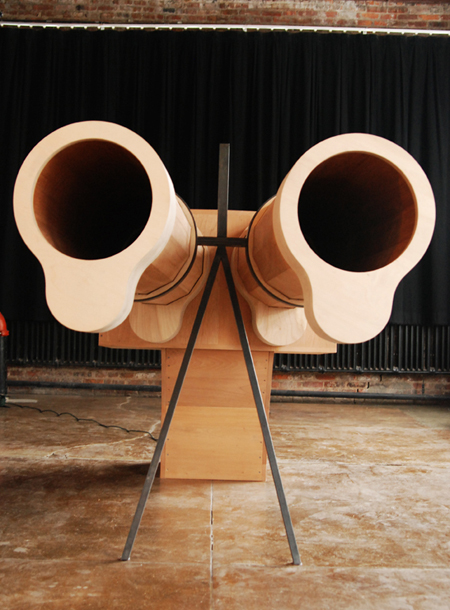
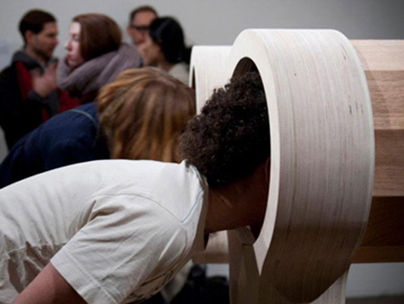
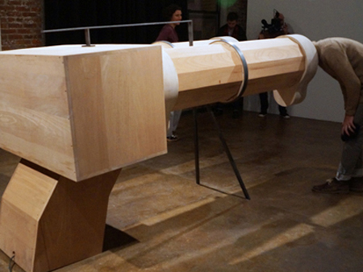

2012 Jan, Sound Installation
Commisioned by the Next Generation Design Leaders Program, which is funded by the Korean Ministry of Knowledge and Economy (MKE) and administered by the Korea Institute of Design Promotion (KIDP)
 
 
Documentation
The idea of Whatever You Say represents asymmetric power relations using sound; individuals have different hierarchical power to speak. Whatever You Say is a giant wooden gun, which generates a short, uncomfortable, low-frequency sound when anyone stands in front of the work. Whatever You Say,with two barrels, represents the power of spoken words to intimidate others through sound alone.
Credit
Hye Yeon Nam and Inmi Lee
Exhibition
2012 Jan, "Touching Anomaly" 3rd Ward, Brooklyn